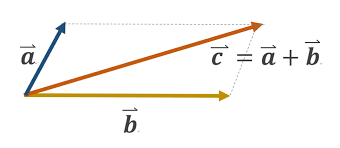
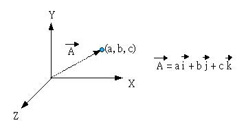
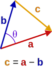
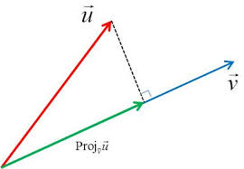
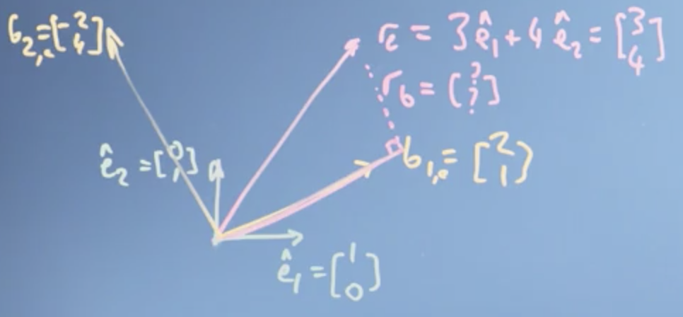
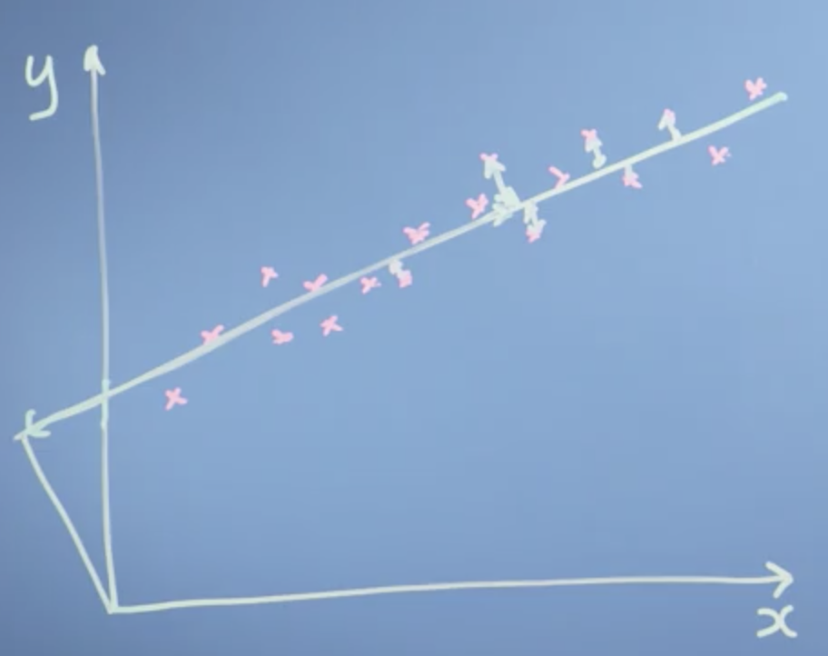

向量的模、夹角和投影
模与内积
模（Modulus）
从几何视角看待向量，它就是一个有方向、有大小的线段(如下图)。

这个关于向量的简单描述（仅仅从几何视角，没有引入任何分解析方法）有如下含义：
- 有方向就是指箭头所指那个方向
- 有大小是指这个线段是有长度的(length, norm, modulus, magnitude等概念都从这里衍生出来)
- 是线段说明它长度是个有限值。
这个视角下，向量也是可以参与计算的 - 满足平行四边形运算法则。
然而，这远远不够。
不引入解析的方法来单独地看待几何视角下的向量，最大优点就是：直观。同时这也是其最大缺点。想要更加灵活、方便地利用向量这个概念进行表示、计算等操作，你需要回答如下2个核心问题，
- 有长度，具体多长？你总不能拿尺子量，用欧氏几何中的各种几何定理计算长度吧？
- 有方向，具体哪个方向？我们知道所谓的方向，是有相对性的。比如，有三个人 A, B, C。B 对 A来说是在右边，对C 来说是在左边。向量的方向同理，当你需要定量、确定地描述一个向量方向的时候，你必须首先确定一个基准，在此基础之上才能够准确描述。
向量就变成了下图这个样子，

在坐标系下定义向量的长度
$\vec r = a\vec i + b \vec j$，其中 $\vec i, \vec j$ 是标准正交基。
$\lVert \vec r \rVert=\sqrt{a^2+b^2}$
$$
\vec r=\begin{bmatrix}
x_1\\
x_2\\
x_3\\
\vdots\\
x_n
\end{bmatrix},
\lVert\vec r\rVert = \sqrt{x_1^2+x_2^2+…+x_n^2}
$$
其中 $\lVert \vec r\rVert$ 是向量 $\vec r$ 的长度 or 模 or 2范数。
内积（Inner Product）
内积是诸多的向量乘法之一，其定义如下：
$$
\vec r=\begin{bmatrix}
r_1\\
\vdots\\
r_n
\end{bmatrix}
,
\vec s = \begin{bmatrix}
s_1\\
\vdots \\
s_n
\end{bmatrix}
$$
$\vec r\cdot\vec s = \sum_{i=1}^n r_is_i=r_1s_1+r_2s_2+…r_ns_n$
如果我们仔细观察，会发现如果$\vec r= \vec s$ 是同一个向量，那么内积的结果就是其长度的平方，
$\vec r\cdot\vec r =\lVert \vec r\rVert ^2$
结论就是：一个向量与自己内积，结果是其模的平方
内积有以下性质：
- 交换律
- 结合律
- 对加法的分配律
Cosine和点积
上一小节解决了向量长度的问题，现在我们思考其方向的问题。
我们用向量的夹角来衡量其方向，正如之前提到的一样-方向是相对而言的，而夹角就具有相对性。
（实际上点积与内积是可以不一样的，但在实数域上定义的vector space中2者是相同的。因此这里不做区分，可以认为点积=内积。）
向量的夹角见下图，

其中, $\vec c=\vec a -\vec b$ .
现在根据余弦定理对夹角 $cos\theta$ ,
$$
\begin{align}
\lVert \vec c \rVert ^2 =\lVert \vec a-\vec b \rVert^2 &=(\vec a-\vec b)\cdot (\vec a-\vec b)\\
&=\vec a \cdot\vec a - \vec a \cdot \vec b - \vec b \cdot \vec a +\vec b \cdot \vec b \\
&=\lVert \vec a \rVert ^2 - 2\vec a \cdot \vec b + \lVert \vec b \rVert^2
\end{align}
$$
由余弦定理可知，
$$
\lVert\vec c\rVert^2 = \lVert \vec a\rVert^2 + \lVert \vec b\rVert^2- 2\lVert\vec a\rVert \lVert \vec b\rVert cos\theta \\
$$
带入可得
$$
\begin{align}
\vec a \cdot \vec b &= \lVert \vec a\rVert \lVert \vec b\rVert cos\theta \\
cos\theta &= \frac{\vec a \cdot \vec b}{\lVert \vec a\rVert \lVert \vec b\rVert}
\end{align}
$$
上面2个公式把点积和夹角余弦联系了起来。我们可由此得知，如果2个向量夹角为$90^\circ$（正交，或者说是垂直） , 则其2者内积为0，反之亦然。
投影
本节课讲的 Projection 都是指 Orthogonal Projection，即：difference(is a vector) of vector x and its projection is orthogonal to this projection. 以后不做明确说明的地方，投影均为正交投影。
投影-Projection 可分为
- 向量对另一个向量的 projection
- 向量对一个空间的projection
本文仅限于第一种情况。其又分为两种情况，
- Scalar projection-数量投影
- vector projection-向量投影
下面先讲数量投影。
投影的几何视角如下图，

上图中绿线为向量$\vec u$ 对向量 $\vec v$ 的投影，记作：$\text{Proj}_{\vec v}\vec u$
上图的直角三角形中由余弦的定义我们可知，
$$
cos\theta =\frac{\text{绿线长度}}{\text{红线长度}}=\frac{\text{Proj}_{\vec v}\vec u}{\lVert \vec u \rVert}
$$
而根据之前我们得到的余弦与点积的关系，我们有，
$$
cos\theta = \frac{\vec u \cdot \vec v}{\lVert \vec u\rVert \lVert \vec v\rVert}
$$
结合上述公式，我们得到，
$$
\begin{align}
\text{Proj}_{\vec v}\vec u = \frac{\vec u \cdot \vec v}{\lVert \vec v\rVert}=\lVert \vec u\rVert cos\theta
\end{align}
$$
上面的结论就是数量投影，从公式中我们很容易知道 $\text{Proj}_{\vec v}\vec u$ 是个 scalar，只有大小没有方向。
那什么是向量投影呢？
保持 scalar projection大小不变的同时让其方向与$\vec v$ 一致，因此向量投影为，
$$
\begin{align}
\text{Proj}_{\vec v}\vec u &= \frac{\vec u \cdot \vec v}{\lVert \vec v\rVert} \frac{\vec v}{\lVert \vec v\rVert}\\
&=\frac{\vec u \cdot \vec v}{\lVert \vec v\rVert ^2}\vec v
\end{align}
$$
其中, $\frac{\vec v}{\Vert\vec v\rVert}$ 是与向量 $\vec v$ 同一方向的单位向量（unit vector）。
改变参照系（Reference Frame）
基变换->坐标系统
基是参照系的基础，在此之上才能够定义一个具体的坐标系统（Coordinate System）。下面给出一个完整的逻辑关系，
$$
\begin{cases}
\text{vector}\\
\text{向量加法}\\
\text{数乘}
\end{cases}
\
\rightarrow
\ \ \text{Space}
\
\rightarrow
\text{Basis, dim}\ \rightarrow \text{Coordinate System}
\rightarrow
\begin{cases}
\text{axes }\leftrightarrow \text{dim} \\
\text{coordinates(index)}
\end{cases}
$$
左边概念是右边概念的基础。

我们有如上图所示的一个向量$\vec r$, 为向量空间取一组标准正交基 ${\vec e_1,\vec e_2}$ , 还有另外一组正交向量 ${\vec b_1,\vec b_2}$ . 选定了基，那么就有坐标系也就有了坐标，其中，
$$
\begin{align}
&\vec e_1=1\cdot \vec e_1 +0\cdot \vec e_2=
\begin{bmatrix}
1\\
0
\end{bmatrix},
&&\vec e_2 = 0\cdot \vec e_1 + 1\cdot \vec e_2=
\begin{bmatrix}
0\\
1
\end{bmatrix}\\
&b_{1,e}=2\cdot \vec e_1+1\cdot \vec e_2=
\begin{bmatrix}
2\\
1
\end{bmatrix},
&&b_{2,e}=-2\cdot \vec e_1 + 4\cdot \vec e_2=
\begin{bmatrix}
-2\\
4
\end{bmatrix}
\end{align}
$$
且已经得知
$$
\begin{equation}
\vec r_e= 3\vec e_1 + 4\vec e_2=
\begin{bmatrix}
3\\
4
\end{bmatrix}
\end{equation}
$$
我们现在的问题是：求 $\vec r$ 在以 ${\vec b_1,\vec b_2}$ 为基的情况下，其坐标是什么？即：
$$
\vec r_b=\begin{bmatrix}
?\\
?
\end{bmatrix}
$$
其中$?$ 是scalar.
首先，从在空间中移动的几何角度来看
我们现在泛化这个问题：在给定标准正交基(e.g. ${\vec e_1, \vec e_2}$ )的情况下，如何确定一个向量的坐标？其本质思想就是：从原点出发，沿着 $\vec e_1$ 的方向走 $x$ steps, 然后沿着 $\vec e_2$ 的方向走 $ y$ steps, 那么 $\vec r$ 的坐标就是：
$$
\vec r_e=
\begin{bmatrix}
x_e\\
y_e
\end{bmatrix}
$$
沿着基向量的方向走了多少步，换句话就是问向量 $\vec r$ 在这两个方向上的数量投影是多少？
于是，这个本质思想我们可以进一步转化为：
将 $\vec r$ 向 $\vec e_1$ 方向投影得到 $\text{Proj}_{\vec e_1}\vec r$, 向 $\vec e_2$ 方向投影得到 $\text{Proj}_{\vec e_2}\vec r$ , 则：$$
\begin{cases}
x_e=\text{Proj}_{\vec e_1}\vec r \\
y_e=\text{Proj}_{\vec e_2}\vec r
\end{cases}
$$
沿着两个basis vector 的方向做投影，也叫做正交分解。注意：这种思路适用于标准正交基的情况，如果基不正交也不是单位基，那么上面的思想就是错误的。但切记，向量加法依然满足平行四边形法则，那么就依然可以利用包含 ? 的那个等式。
现在还有一个问题，如果给定的基只正交但不标准（比如我们现在要解决的问题，$\vec b_1,\vec b_2$ 虽然正交但不是单位向量）的时候如何得到一个向量的坐标呢？其实，我们只需要修改上面思想的一些细节，就可以得到答案。
给定一个正交基（无论标准与否）${\vec b_1,\vec b_2}$，和一个向量 $\vec r$。现在要求向量 $\vec r$ 在这个基下的坐标 $\vec r_b$. 其本质思想为：从原点出发，沿着 $\vec b_1$的方向走 $x_b$ steps， 沿着$\vec b_2$ 方向走 $y_b$ steps, 那么 $\vec r$ 的坐标应该为
$$
\vec r_b =
\begin{bmatrix}
x_b\\
y_b
\end{bmatrix}
$$
且其值为：
$$
\begin{cases}
x_b = \frac{\text{Proj}_{\vec b_1} \vec r }{\lVert \vec b_1\rVert}=\frac{\vec r \cdot \vec b_1}{\lVert \vec b_1\rVert^2}\\
y_b = \frac{\text{Proj}_{\vec b_2} \vec r }{\lVert \vec b_2\rVert}=\frac{\vec r \cdot \vec b_2}{\lVert \vec b_2\rVert^2}
\end{cases}
$$
为什么当给定的基只正交而不标准的时候，相比正交基而言坐标的分母会多出一个模？这是因为我们之前说过，坐标系统是相对而言的： 一个向量自己无所谓什么角度，必须是它相对于什么方向的角度；从原点出发在空间中沿着一个方向走几步， 这个steps 是相对哪个刻度而言的？这个刻度就是$\lVert \text{basis vector}\rVert$ .
- 对于标准正交基而言其长度为1，从原点出发沿着基向量的方向依次走的 steps 是意味着 “我在各个方向，相对那个方向的基向量我走了几步，这个几步是由 $\frac{\text{走的长度}}{\text{该方向基的长度}}$ 来衡量的”。由于基向量长度为一，因此向量$\vec r$ 在基向量方向的数量投影就是坐标。
- 对于正交但不标准的基而言，由于“该方向的长度” 不是1，因此在上面公式中我们求解坐标（步长-steps） $x_b,y_b$ 的时候会多出来一个分母-基向量的模。
从代数结合四边形法则的角度，
本问题中，我们最后要得到的是
$$
\vec r_b = \begin{bmatrix}
?\\
?
\end{bmatrix}
$$
由于在给定基 $ {\vec e_1,\vec e_2}$ 的情况下，$\vec r, \vec b_1, \vec b_2$ 都是有其坐标的，其坐标如下：
$$
\vec r_e = \begin{bmatrix}
3\\
4
\end{bmatrix},
\vec b_{1,e}= \begin{bmatrix}
2\\
1
\end{bmatrix},
\vec b_{2,e} = \begin{bmatrix}
-2\\
4
\end{bmatrix}
$$
我们就是要找到上述3者如下的关系：
$$
\vec r_e = ?\cdot \vec b_{1,e} + ?\cdot \vec b_{2,e}
$$
那么就能得到 $\vec r_b$ 了。
上面的式子右边是 两个向量之和，且这两个向量一个在 $\vec b_{1,e}$ 方向，一个在 $\vec b_{2,e}$ 方向，根据四边形法则我们自然想到等式右边的两个向量就是 $\vec r_e$ 在$\vec b_{1,e}, \vec b_{2,e}$ 方向上的分量，又因为$\vec b_{1,e},\vec b_{2,e}$ 正交，那么正交分解即：投影！
$?\cdot \vec b_{1,e}$ 和 $?\cdot \vec b_{2,e}$ 就是向量 $\vec r$ 在对应方向上的向量投影根据向量投影公式 ，
$$
\text{Proj}_{\vec v}\vec u = \frac{\vec u \cdot \vec v}{\lVert \vec v\rVert^2}\vec v
$$
我们可知，$\vec r_b$ 为
$$
\vec r_b = \begin{bmatrix}
?\\
?
\end{bmatrix}=
\begin{bmatrix}
\frac{\vec r_e \cdot \vec b_{1,e}}{\lVert \vec b_{1,e}\rVert^2} \\
\frac{\vec r_e \cdot \vec b_{2,e}}{\lVert b_{2,e}\rVert^2}
\end{bmatrix}=
\begin{bmatrix}
2\\
\frac{1}{2}
\end{bmatrix}
$$
从matrix与线性组合的角度看，
$$
\vec r_e = ?\cdot \vec b_{1,e} +?\cdot \vec b_{2,e}
$$
等式左侧是个向量，右侧是2个向量的线性组合，可将其转化为：
$$
[\vec b_{1,e}, \vec b_{2,e}]\begin{bmatrix}
?\\
?
\end{bmatrix}=\vec r_e
$$
将坐标带入，解此线性方程组即可得 $\vec r_b$.
向量空间、基与线性无关
向量空间
满足以下两个条件的$\mathbb{S}$ 称为向量空间：
- $\mathbb{S}$ 是一个向量的集合
- $\mathbb{S}$ 对 向量加法 和 数乘 这两个操作是封闭的。
Basis 是n个向量的集合，且满足，
- 线性无关-linear independent（are not linear combinations of each other.）
- Span 整个空间
然后， 这个空间就是一个n-dim的向量空间。
标准正交基的特性
不同的basis 对应不同的坐标系统。当我们从一组标准正交基 变换到另一组标准正交基的时候，空间中向量对应的坐标会发生变化，但是
- 依然保持对向量加法和数乘的封闭性。
- 空间依然是均匀间隔的。
空间可能会被拉升、旋转、反向，but everything remains evenly spaced and linear combinations still work.
当基向量不正交的时候
此时我们就不能仅仅使用 dot product 来进行坐标变换了，我们需要使用矩阵进行：transformation of axes。
基变换的应用
这部分内容需要回头看，需要结合Gilbert的书反复思考！入门级的机器学习是一个Linear regression 的任务：Fitting a Line! 如下图，

比如将上图中的点从 xoy 空间中映射到那条直线上，去衡量”error”的大小（我们希望越小越好！error 有时候也叫 “resudial”,”noise”）
比如神经网络做人脸识别，某种程度上或多或少地是将像素点映射到另一个空间，然后抽取出那个空间的一组基向量来表示更高级的feature：鼻子的形状、眼睛的距离等等。
现实世界中向量的应用
总结
- 向量是描述我们在空间中位置的一个可以移动的对象
- 物理空间、data space、参数空间（parameters of a function），etc.
- 向量加法 ， 数乘 是最基本的2个操作
- 向量基于上述两个操作，向量可以在空间中移动
- 定义了space 的基
- 线性无关
- 线性相关(由linear combination来定义相关性)
- 空间的维度=其基向量的个数
- 用projection 来考虑当从一个正交基变换到另一个正交基时，坐标系统的变化（空间中向量坐标的变化）。